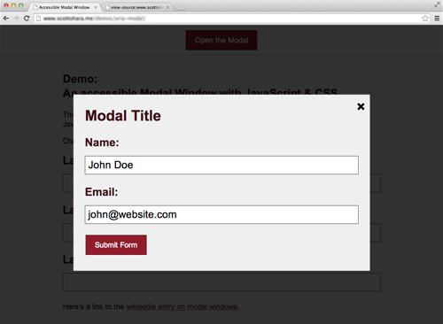

Animating Without jQuery
There’s a false belief in the web development community that CSS animation is the only performant way to animate on the web. This myth has coerced many developers to abandon JavaScript-based animation altogether, thereby (1) forcing themselves to manage complex UI interaction within style sheets, (2) locking themselves out of supporting Internet Explorer 8 and 9, and (3) forgoing the beautiful motion design physics that are possible only with JavaScript.